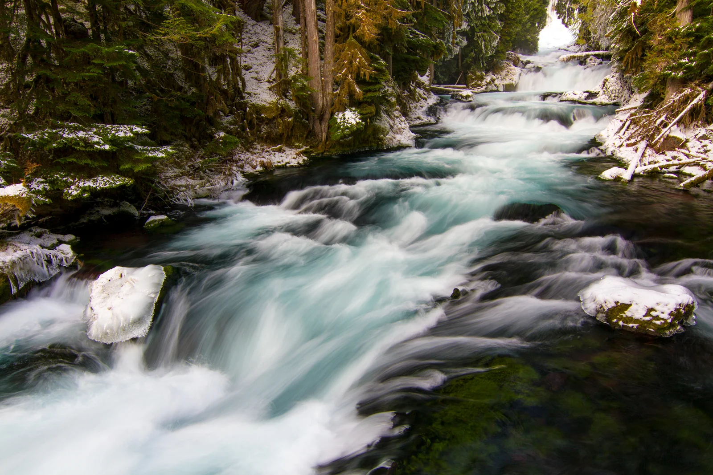
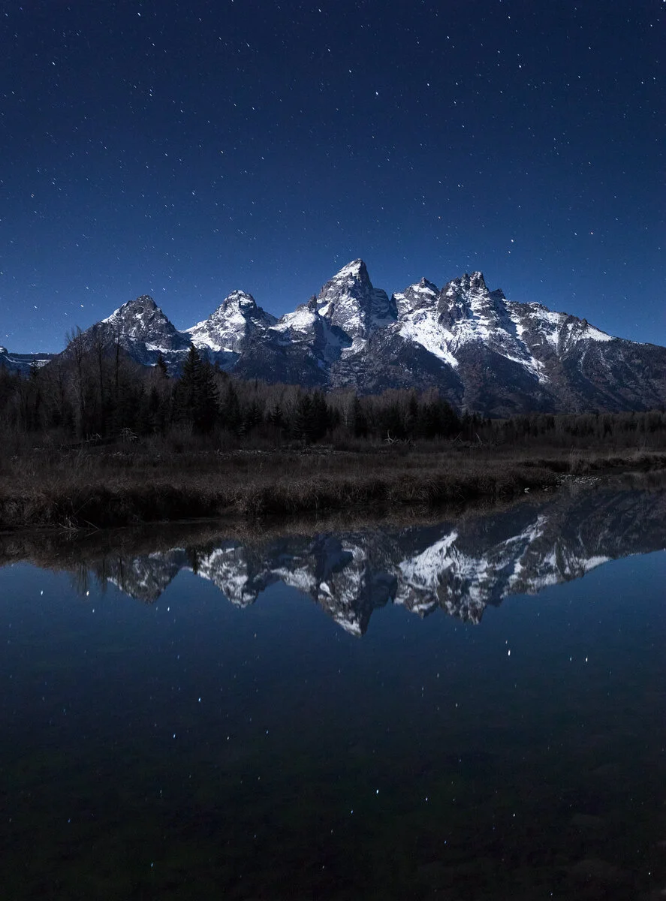
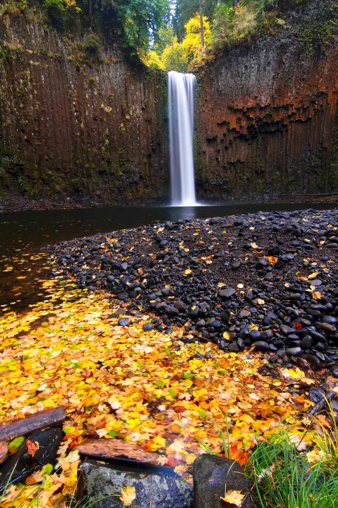
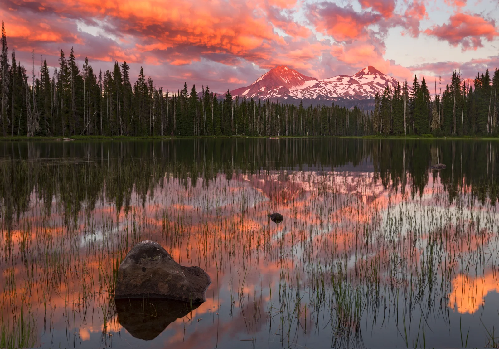

Skyler Hughes Photography
Landscape and outdoor photography by Skyler Hughes. Designer and photographer from the Pacific Northwest.











Landscape and outdoor photography by Skyler Hughes. Designer and photographer from the Pacific Northwest.



